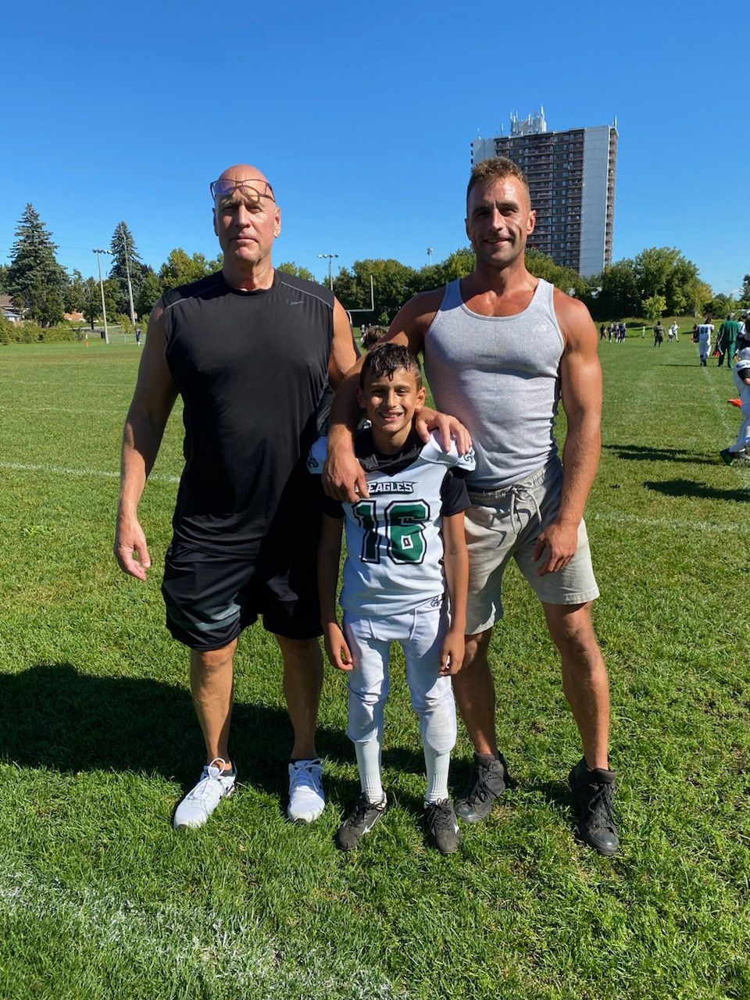
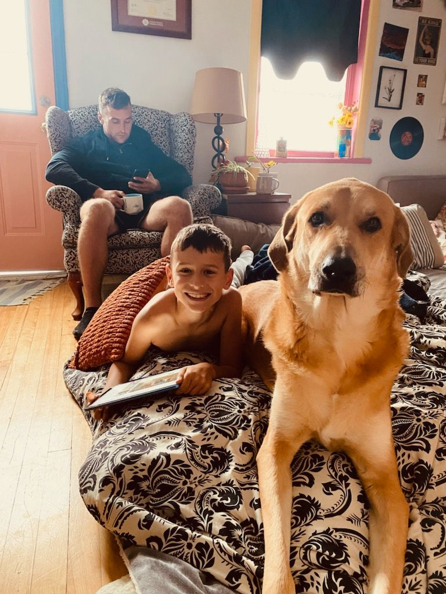

I used to think cold turkey was just part of the price.
Lock yourself in a room. Sweat through your clothes. Puke into a bucket. Shake, cry, and white-knuckle it for a few days. A lot of us wore that pain like a badge — the tougher you were, the more you earned your recovery.
That thinking will get you killed now.
Back in 2011 when I first hit detox in Kitchener, a lot of people were coming off oxys and hydros. It was ugly as hell, but it felt more straightforward.
The street supply today is a completely different animal — fentanyl, street benzos, xylazine, medetomidine, and whatever else they throw in. People aren’t just getting sick when they try to quit. They’re seizing, hallucinating, ending up in delirium, or dead.
I’m a roofer in Ottawa, four years clean, and I’m telling you straight: cold turkey is dead.
I tried to quit cold turkey once after about seven months of everyday IV use. It went bad fast.
I had a seizure. A bad one. My girlfriend tried to help and got hit while I was flailing. She called 911. I don’t remember any of it. Next thing I knew I woke up in the back of an Ottawa police cruiser, then got charged and thrown in a cell.
That wasn’t even the worst.
Last time in jail I went into full psychosis. I was too scared to tell the guards or healthcare anything — didn’t want to look weak. I got paranoid as hell. Refused to crack off one time because I was in the start of delirium, and that made me the aggressor on camera. Got into it with the range, got maxed out. Later my celly beat me up because I was screaming and losing my mind. We made up after, but that shows how gone I was.
Then I thought I was riding a motorcycle around the hospital. Blacked out again. Woke up at Ottawa General, shackled to a gurney with one hand free to eat. That lasted a week.
And it wasn’t just me.
When I got arrested, a buddy tried to quit cold turkey. Nobody heard from him for three days. My girlfriend found him in his rooming house, incontinent and deep in delirium. They rushed him to emerge, did a spinal tap, and he barely pulled through after a week or two.
This supply is a poly-drug nightmare now. It’s not one thing anymore. It’s opioids stacked with unregulated benzos and animal sedatives that hijack your brain and turn withdrawal into something way more dangerous and unpredictable.
This isn’t your grandpa’s dope anymore.

Medical detox is the only safe move. But in Ontario, safe does not always mean easy to access.
Medical detox means getting stable with real support — doctors or trained staff, meds to keep you safe, 24/7 monitoring so your body doesn’t revolt with seizures, delirium, or psychosis.
But here’s the honest part nobody wants to say out loud: many withdrawal management places in Ontario are non-hospital settings. They’re abstinence-based. They limit smoking, movement, and basically ask you to sit still in a structured bubble while your body clears out.
I get why they do it — they need to contain symptoms and keep everyone safe. But ask yourself this: how realistic is it to tell someone coming off unregulated chemicals stacked on top of each other to just “don’t move, don’t leave, stay comfortable in this isolated spot”?
We adapted a cold-turkey, abstinence approach years ago when the dope was simpler. That approach doesn’t cut it with today’s supply. If we don’t have enough true medical detoxes with doctors who can manage complex withdrawal, we should at least make people as comfortable as possible — easier access to comfort meds, a bit more freedom to move, less locked-down feeling.
Here’s the part nobody wants to say out loud. Medical detox is the safest move, but there still aren’t enough spots, and not every detox is built for how bad this supply has gotten.
Some places are doing their best with a few beds, on-call doctors, maybe an RPN, and a pile of people way sicker than the system was designed for. If you’re seizing, in psychosis, hearing shit, or coming off a filthy mix of fent, benzos, xylazine, and whatever else, they may not even be able to keep you there safely. That doesn’t mean detox is bullshit. It means Ontario built a system for one crisis and now we’re in a worse one.
Right now in Ottawa:
The toxic supply is creating more medically complicated withdrawals than the system was built for. The highest-risk people often get redirected to emergency first.
Don’t freeze. Don’t use again just because you don’t know who to call.
Use my Three Paths tool on this site and make the next safe move.
Keep calling every day. Write the numbers down. Push until you get a bed or a clear next step.

I wish I had done proper medical detox earlier. Not because it would have fixed everything overnight, but it would have saved me a lot of damage — charges, violence, fear, hospital time, jail time, and some of the worst humiliation of my life.
I thought toughing it out made me strong. It didn’t. It nearly destroyed me.
That’s why I push this so hard for trades guys and people coming out of custody. We’re used to sucking it up and powering through. But with this supply, powering through can kill you or land you in psychosis.
The smart move is the safe move: get stable first with whatever level of medical support you can access.
You don’t have to figure this out alone. I’ve been exactly where you are, and I made it to the other side.
One smart move at a time.
— Josh Pearsall
Recovery Roofer, Ottawa